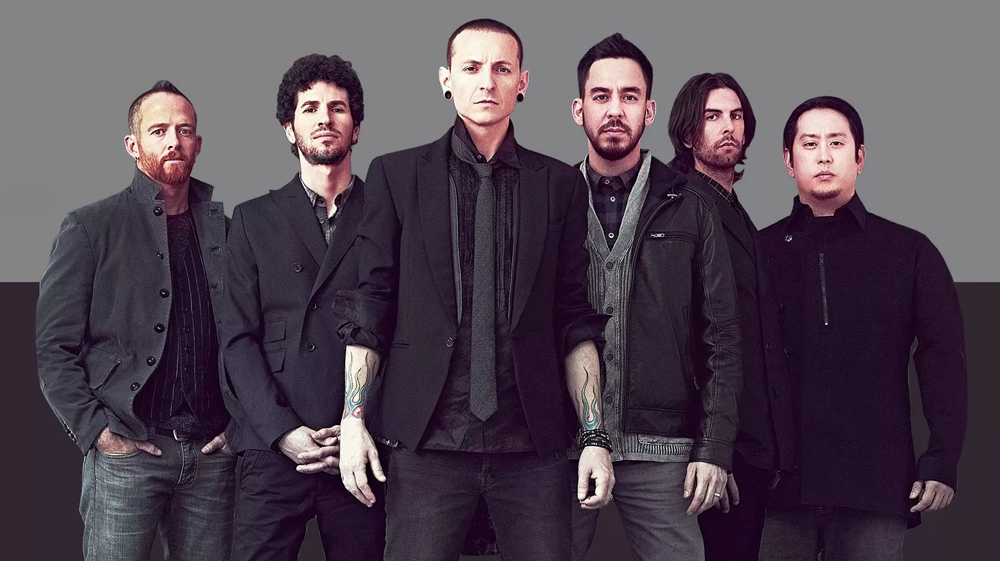

Band Members, from left to right, Dave Farrell, Brad Delson,
Chester Bennington, Mike Shinoda, Rob Bourdon, and Joe Hahn.
A timeline of the life of Linkin Park
1996 - The band was founded, first known as Xero.
1999 - Changed their name from Xero to Hybrid Theory,
then finally to Linkin Park - to recognize and honor Santa Monica’s Lincoln Park.
2000 - Their first album Hybrid Theory was released and became the top-selling album in the U.S.,
selling over 4.8 million copies en route to being certified 10 times platinum, won Grammy Award for Best Hard Rock Performance for the song "Crawling"
and was nominated for two other Grammy Awards: Best New Artist and Best Rock Album.
MTV also awarded the band their Best Rock Video and Best Direction awards for "In the End."
2001 - Linkin Park Underground, a fan club and street team, was founded by the band in collaboration with Jessica Sklar.
Hybrid Theory's phenomenal success resulted in a series of prime touring opportunities - Ozzfest and their own tour, Projekt Revolution.
In all, they performed a staggering 324 live shows in 2001.
2002 - Reanimation was released - a remix album from Hybrid Theory including non-album tracks.
Reanimation claimed 2nd spot on the Billboard 200.
2003 - Meteora debuted No.1 in US and UK, while No. 2 in Australia. By the time the year was over,
Meteora had sold 3.4 million copies, and Linkin Park had won a World Music Award for Best Rock Group and an American Music Award for Favorite Alternative Artist.
The band also won the MTV awards for Best Rock Video for "Somewhere I Belong" and the Viewer's Choice Award for "Breaking the Habit".
Linkin Park also received the award for Artist of the Year and Song of the Year ("Numb") during the 2004 Radio Music Awards
2004-2005 - Linkin Park participated in numerous charitable events, most notably raised money to benefit victims of Hurricane Charley in 2004 and Hurricane Katrina in 2005.
The band donated $75,000 to the Special Operations Warrior Foundation and contributed relief efforts for the 2004 Indian Ocean tsunami victims by performing several charity concerts
and setting up Music for Relief. The band continued their charitable efforts by participating at Live 8 to raise global awareness.
2007 - Minutes to Midnight was released and sold over 625,000 copies in its first week.
The album also took the top spot on the Billboard Charts. The album's first single, "What I've Done", was released, and premiered on MTV and Fuse.
The single became the top-ranked song on the Billboard's Modern Rock Tracks and Mainstream Rock Tracks charts. Later in the year, the band won the
"Favorite Alternative Artist" in the American Music Awards.
2007 - A Thousand Suns was released. Linkin Park reached No.8 in Billboard Social 50, No.92 in the "Top Artists" chart, as well as A Thousand Suns reaching No.53 in the
Year-End chart of the Billboard Top 200 albums, and No.7 in the 2010 Year-End Rock Albums. "The Catalyst" also reached No.40 in the Year-End Rock Songs chart.
2012 - Living Things debuted and sold over 223,000 copies during its debut week, ranked No. 1 on the US Albums Charts. Linkin Park's single, "Castle of Glass",
was also nominated for 'Best Song in a Game' at the 2012 Spike Video Game Awards.
2014 - The Hunting Party was released. MTV Europe named Linkin Park the "Best Rock". The band was awarded the 'Best Rock Band' and 'Best Live Act' titles of 2014
on Loudwire's Music Awards. Revolver also ranked The Hunting Party as the fourth best album of 2014.
2017 - One More Light was released. On the same year, Chester Bennington committed suicide. The band later performed a concert titled
"Linkin Park and Friends: Celebrate Life in Honor of Chester Bennington" which featured multiple guests performing Linkin Park songs along with the band. Linkin Park received an American Music Award
for Favorite Alternative Artist and dedicated the award to Bennington.